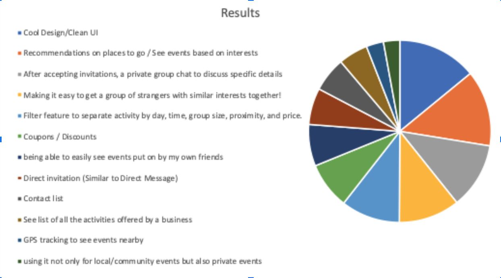

This week our team tackled the “Goal Based Technique”. Unlike some other elicitation techniques, it focuses less on gathering a lot of information. Instead, it focuses more on using the information that we have gathered to create goals for the project. These goals should be structured in a hierarchical format that illustrates long term goals for the project and the smaller steps that we will be taking to achieve them.
Our team received feedback from potential users on what features would be useful in the app, so these are, in part, being used for forming possible goals. In addition, feedback from our own team and potentially others is being used to come up with goals compatible with the entire class.
The Goal based technique has many pros. The first of which would be that the goal based technique helps organize data in a way that makes it possible to base the needs of the project on the data organized. The Goal based list is a great way to get an idea of the needs of the customer and the stakeholders. If done right, the order of the data and the requirements for the project will reflect the concerns of the stakeholders. As you can imagine, this can be extremely effective when trying to prioritize the need of the project.
The data gathered can also be used to start a backlog when using an agile development process like scrum. To be able to have a list of needs that are organized by value can help the process.
The Goal based technique can become extremely complex. When trying to get the project requirements and have the list sorted by most important to least important, many different perspectives must be taken into account. Trying to get the needs of the customer and the needs of the stakeholders addressed within the list of priorities can become a tedious process.
Furthermore, if the Goal based process is not properly executed, the list will be inaccurate. This means that the needs of both the stakeholders and the customers will be misrepresented.
The goal based technique is the process of gathering a list of the necessary requirements that will meet the needs of the customers/stakeholders. The requirements must be prioritized not only by the need of the project, but also by the needs of the stakeholders[1]. In order to get the prioritized needs of both the stakeholders and the customers, the benefits of and costs of the requirements must be taken into account when prioritizing the list[1].
Stakeholders in this technique will consist of the company, Team members within the products development members.
Customers are end-users, people who would use this application outside of testing and design.
Customers will receive a list of goals that will need to be ranked most important to least important. This will provide the project with the design ideas that are most important to the customer. The company will also receive a list of goals that will need to be ranked most important to least important. The company’s list will better provide the project with comparison’s of each list. The comparison can determine the outcome of the product's design.
We will be using Bottom-up approach and for the successful implementation of the plan we will be strictly following the steps described below.
Team 2’s individuals researched the technique and reported their understanding of it and it’s elicitation process. Google Scholar was suggested, and provided beneficial results with qualified credibility.
The collaboration concluded with each member having a clear understanding of the technique and its elicitation process. Minor ideas and quick thoughts were suggested on how to proceed with the elicitation.
Data retrieved from previous weeks was gathered, sorted, and formatted into an unordered list of goals. These goals, after being listed, were constructed to plan some of the product’s most important and popular potential features.
We contacted two groups, customers and the company. The only instruction given to each group was that every goal needed to be ranked with a number or N/A (features the individual did not think necessary). The data was collected after both groups completed their task.
The data was analyzed by comparing ranked goals amongst all members participating.
The data from the exercise document indicates that stakeholders are more concerned about the ability of the app to allow users to customize things based on things such as their interests, location, etc. The data also indicated that the design and ease to use of the app is a priority for our stakeholders. A detailed version of the data is provided later in this document.
Here are the features that scored the best as most important from the combined results of the rankings.
These are the top six results and so these need to be the Goals that we set for the project.